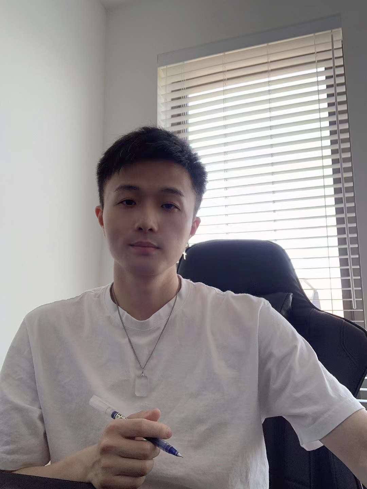
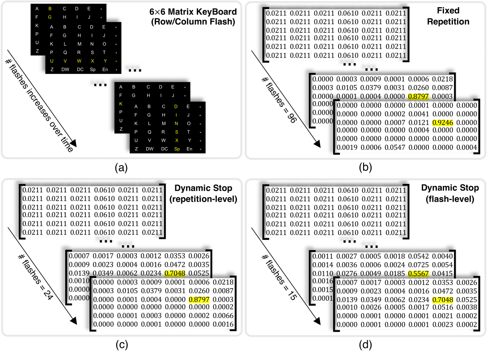
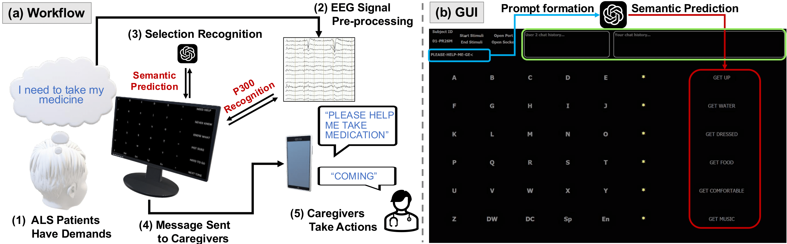
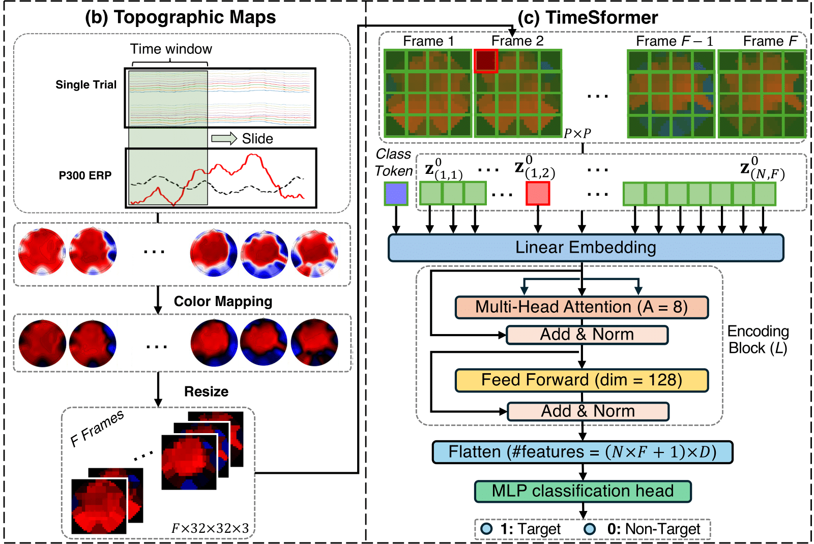
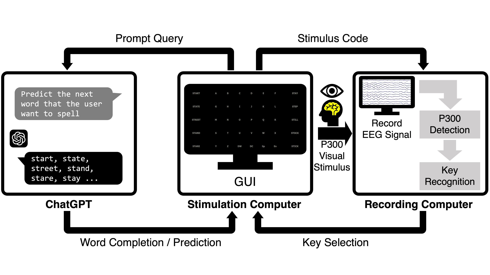
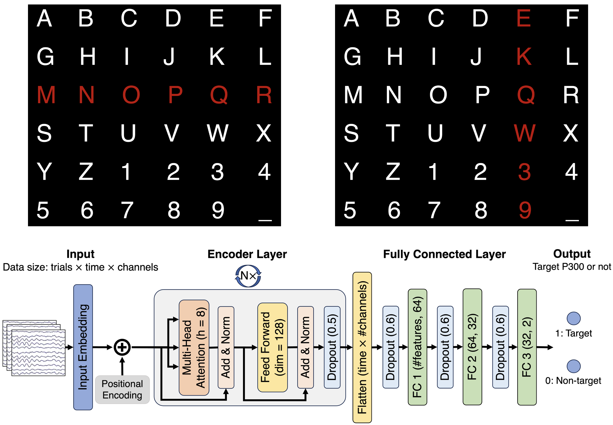
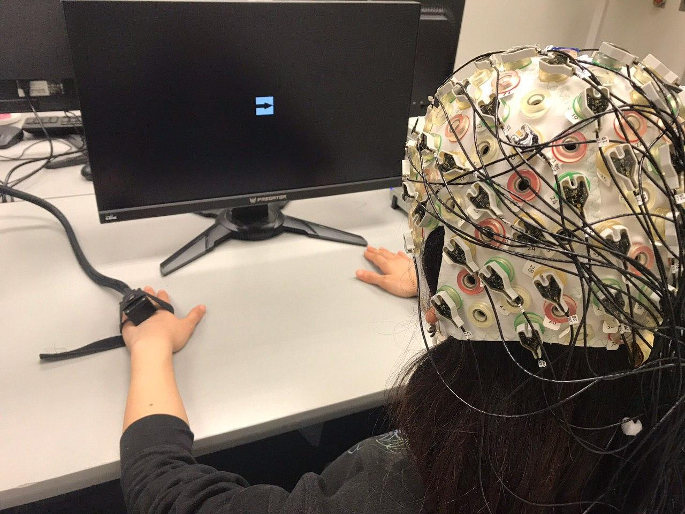

Ph.D. Candidate · Electrical & Computer Engineering · Rutgers University
Advised by Prof. Laleh Najafizadeh at the Integrated Systems & NeuroImaging Laboratory. Also a Research Scientist at EMOTIV Research.
Serves on the Technical Program Committee of IEEE ISBI 2026. Research interests: non-invasive brain-computer interfaces, EEG decoding, real-time neural communication, and foundation models for neural signals.
In Fall 2024, I worked as a Research Intern at Emotiv, focusing on Foundation Models and Generative AI for Brain-Computer Interface (BCI) applications. At Rutgers in 2024, I designed a P300 Speller BCI incorporating Generative AI. In 2023, I developed an LLM-based BCI mind-controlled speller system aimed at assisting individuals with disabilities in communication. In 2022, I created a channel selection method to enhance the speed and efficiency of BCIs in real-world applications. In 2020, I proposed a geometric approach to optimize the k-means algorithm, addressing issues related to local minima. Before joining Rutgers University in 2019, I conducted biostatistics research at Harvard Medical School, focusing on pancreatic cancer diagnosis.





